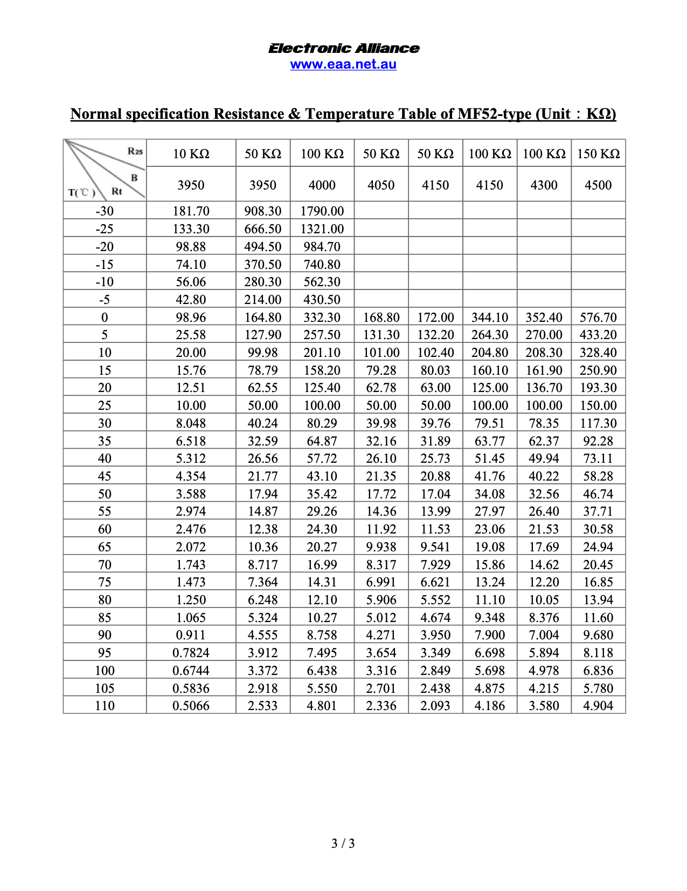

NTC
NTC温度计算，没有上NTC电阻的料，是一个固定阻值的电阻
参考文档
阻值表

温度 |
阻值（千欧） |
|---|---|
-30 |
181.70 |
-25 |
133.30 |
-20 |
98.88 |
-15 |
74.10 |
-10 |
56.06 |
-5 |
42.80 |
0 |
98.96 |
5 |
25.58 |
10 |
20.00 |
15 |
15.76 |
20 |
12.51 |
25 |
10.00 |
30 |
8.048 |
35 |
6.518 |
40 |
5.312 |
45 |
4.354 |
50 |
3.588 |
55 |
2.974 |
60 |
2.476 |
65 |
2.072 |
70 |
1.743 |
75 |
1.473 |
80 |
1.250 |
85 |
1.065 |
90 |
0.911 |
95 |
0.7824 |
100 |
0.6744 |
105 |
0.5836 |
110 |
05066 |
chip and ntc temperature
#!/usr/bin/env python3
from smbus import SMBus
i2cbus = SMBus(1) # Create a new I2C bus
i2caddress = 0x3c # Address of SW6106 device
chipTemeratureLow = i2cbus.read_byte_data(i2caddress, 0x1a)
chipNTCtemperature = i2cbus.read_byte_data(i2caddress, 0x1b)
ntctemperatureLow = i2cbus.read_byte_data(i2caddress, 0x1c)
chipTempratue = ((((chipNTCtemperature & 0x0f) << 8) | (chipTemeratureLow & 0xff)) - 1851) * 1 / 6.82
ntcTemperature = ((((chipNTCtemperature & 0xf0) >> 4) << 8) | ntctemperatureLow) / 1.1 / 80
print(chipTempratue)
print(ntcTemperature)
实时获取温度
如上处理代码，NTC的阻值貌似是一个固定的阻值，也就是生产的主板没有上NTC的料，而是上了一个固定的阻值的电阻
---------------------------------------
chip low, ntc chip, ntc low: 0x42, 0x28, 0xce
chip: 0x842
ntc: 0x2ce
Resistance: 8.159090909090908
RT - 1: (25, 10.0)
RT : (30, 8.048)
diffx, diffy, slope: 5, -1.952, -0.39039999999999997
chipTempratue: 38.56304985337243
ntcTemperature: 29.715443368107305